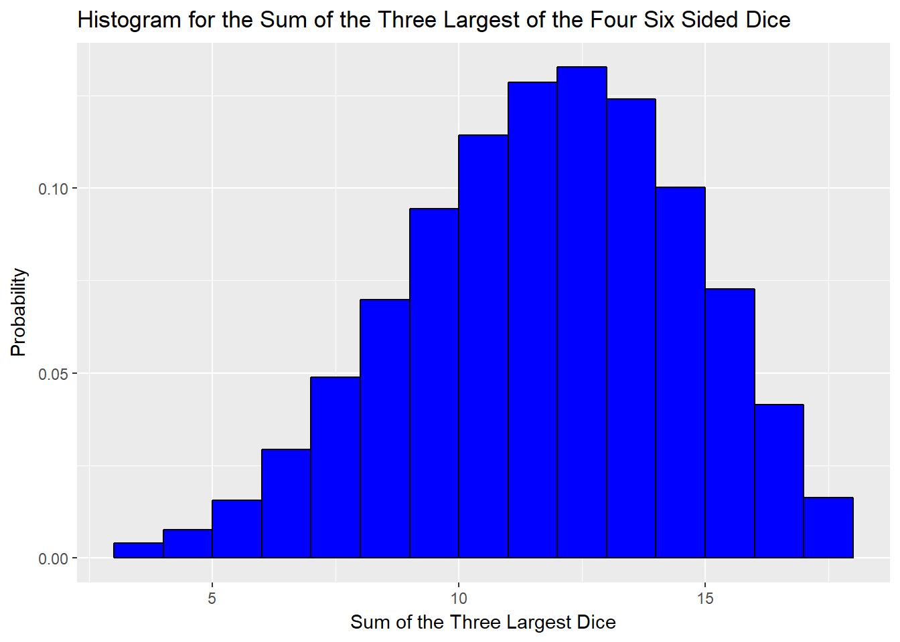
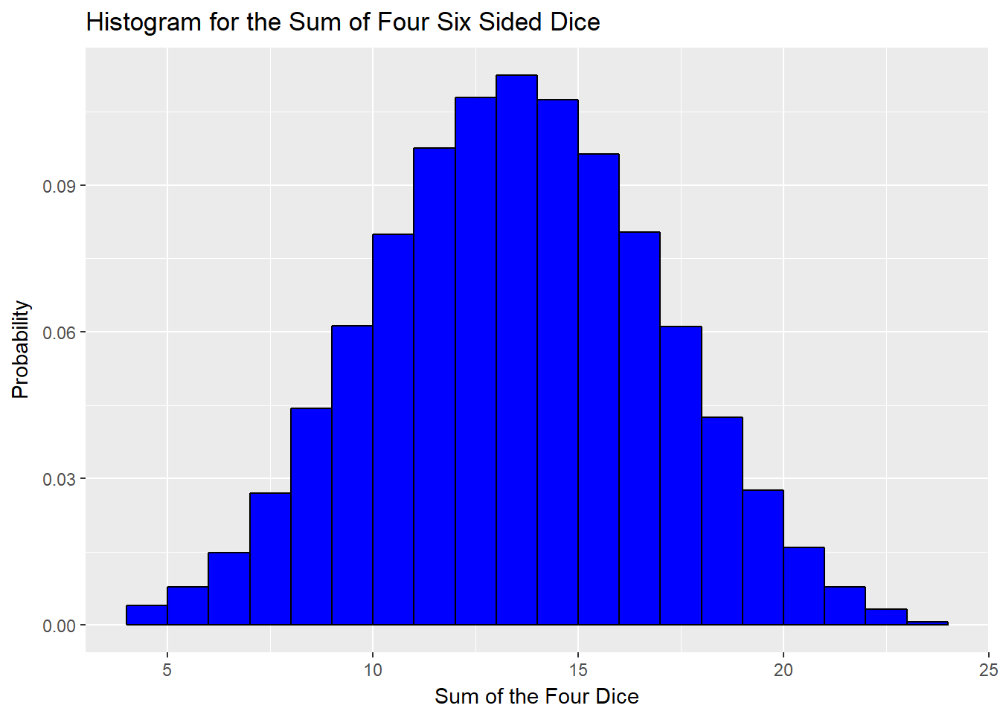

Ability Scores
If you like doing things randomly, like your ole buddy Biscuit here, then you’d rather not use the “15, 14, 13, 12, 10, 8” rule despite it’s convenience.
To determine the ability scores “manually” you roll four six-sided dice and take the sum of the resulting values while ignoring the smallest valued roll.
I know what you be thinking, what do those probabilities look like?
I’m disappointed you asked. . .
Anywho, it is really friggin’ annoying to map out the probabilities possible for four die rolls, even if they are only six-sided. As a result, I am going to estimate the probabilities using a simulation of 100,000 die rolls of four dice.
For comparision sake, I will show the distribution of the probabilities if all four dice were used and if only the three highest valued were used.
Simulation Study
# Biscuit
# 07/01/2016
# Some DandD calculation
# Find working directory
getwd()## [1] "C:/Users/Matthew Buras/Documents/GitHub/blogdown_source/content/post"# Change working directory to desired location
setwd("C:/Users/Matthew Buras/Documents/GitHub/blogdown_source/content/post")
iter <- 100000
sum4 <- rep(0, iter)
sum3 <- rep(0, iter)
start.time <- proc.time()
for (i in 1:iter){
set.seed(i)
Roll <- ceiling(runif(min = 0, max = 6, n = 4)) #Rolls four six-sided dice for each iteration
sum4[i] <- sum(Roll) #sums all four
sum3[i] <- sum(Roll)- min(Roll) #removes the smallest valued roll from the total sum
}
proc.time()-start.time #run time of the loop (in seconds)## user system elapsed
## 1.82 0.04 1.84#Look into the Tidyverse
library(tidyverse) #require some packages to create histograms later## Loading tidyverse: ggplot2
## Loading tidyverse: tibble
## Loading tidyverse: tidyr
## Loading tidyverse: readr
## Loading tidyverse: purrr
## Loading tidyverse: dplyr## Conflicts with tidy packages ----------------------------------------------## filter(): dplyr, stats
## lag(): dplyr, stats# Convert the vectors into dataframes so that we can make plots (YAY)
dat3 <- as.data.frame(sum3)
dat4 <- as.data.frame(sum4)Table of Probabilities
# Create probability tables for reference
# Probabilities for the sum of the three highest valued die rolls
h3 <- hist(sum3, breaks=(seq(2.5, 18.5, by=1)), plot = FALSE)
h3probs <- h3$counts/iter
sums3 <- seq(3, 18, by = 1)
sum3table <- as.data.frame(cbind(sums3, h3probs))
names(sum3table) <- c("Sum", "Prob")
library(knitr)
kable(sum3table, caption = "Probabilities for the sum of the three highest valued die rolls.")| Sum | Prob |
|---|---|
| 3 | 0.00077 |
| 4 | 0.00324 |
| 5 | 0.00773 |
| 6 | 0.01566 |
| 7 | 0.02937 |
| 8 | 0.04881 |
| 9 | 0.06983 |
| 10 | 0.09436 |
| 11 | 0.11432 |
| 12 | 0.12848 |
| 13 | 0.13264 |
| 14 | 0.12405 |
| 15 | 0.10011 |
| 16 | 0.07273 |
| 17 | 0.04150 |
| 18 | 0.01640 |
# Probabilities for the sum of all four dice rolled
h4 <- hist(sum4, breaks=(seq(3.5, 24.5, by=1)), plot = FALSE)
h4probs <- h4$counts/iter
sums4 <- seq(4, 24, by = 1)
sum4table <- as.data.frame(cbind(sums4, h4probs))
names(sum4table) <- c("Sum", "Prob")
kable(sum4table, caption = "Probabilities for the sum of all four dice rolled.")| Sum | Prob |
|---|---|
| 4 | 0.00077 |
| 5 | 0.00324 |
| 6 | 0.00773 |
| 7 | 0.01482 |
| 8 | 0.02696 |
| 9 | 0.04432 |
| 10 | 0.06128 |
| 11 | 0.07997 |
| 12 | 0.09760 |
| 13 | 0.10788 |
| 14 | 0.11257 |
| 15 | 0.10747 |
| 16 | 0.09634 |
| 17 | 0.08046 |
| 18 | 0.06101 |
| 19 | 0.04245 |
| 20 | 0.02761 |
| 21 | 0.01586 |
| 22 | 0.00776 |
| 23 | 0.00321 |
| 24 | 0.00069 |
Estimated Distributions
Notice that summing only the three highest valued rolls skews the distribution of the probabilities.
q3 <- ggplot(dat3, aes(x=sum3)) + geom_histogram(breaks=seq(3, 18, by=1), fill="blue", col="black",
aes(y = ..count../sum(..count..)))
q3 <- q3 + ggtitle("Histogram for the Sum of the Three Largest of the Four Six Sided Dice") + labs(y = "Probability",
x = "Sum of the Three Largest Dice") + xlim(c(3, 18))
q3
q4 <- ggplot(dat4, aes(x=sum4)) + geom_histogram(breaks=seq(4, 24, by=1), fill="blue", col="black",
aes(y = ..count../sum(..count..)))
q4 <- q4 + ggtitle("Histogram for the Sum of Four Six Sided Dice") + labs(y = "Probability",
x = "Sum of the Four Dice") + xlim(c(4, 24))
q4
How You Too Can Do Fun Things with R (a free statistical software)
If you are sufficiently convinced that determining your own scores by rolling (as opposed to the “15, 14, 13, 12, 10, 8” shortcut), then you can use this function in R (if you already have it or download it for free).
Roll <- ceiling(runif(min = 0, max = 6, n = 4)) #Rolls four six-sided dice
Roll## [1] 1 3 2 3sum(Roll)- min(Roll) #calculates the sum keeping only the three highest valued dice## [1] 8Note: you can also use the following free online R compiler jdoodle. Just copy and paste the three lines of code above and then click “Execute”.
Which is More Advantageous?
On an individual, ability score, basis it is hard to say. However, if we generalize a little bit we can come up with an answer rather nicely. Suppose we were interested in which technique (rolling our own dice vs 15, 14, 13, 12, 10, 8) produced the highest ability score, on average. Let X = sum(top three highest valued dice). Given the total ability score from the “15, 14, 13, 12, 10, 8” rule is 72 it suffices to calculate P(\(6X\ge72\)). This will tell us if we are either more likely or less likely to roll better overall or not. And, as a result, which technique is more advantageous.
P(\(6X\ge72\)) = P(\(X\ge72/6\)) = P(\(X\ge12\)) = P(X=12) + P(X=13) + … + P(X=17) + P(X=18) = 0.62 (using the first table of probabilities)
#Keep probabilities for sums greater than or equal to 12
relevant3 <- sum3table[sum3table$Sum > 11, ]
sum(relevant3$Prob)## [1] 0.61591So it appears that rolling is likely to produce a larger total of ability scores.
Alternatively we could have looked at the expected value of the probability distribution regarding the sum of the three largest valued dice and compare that to 72/6 = 12.
Prod <- sum3table$Sum * sum3table$Prob
sum(Prod)## [1] 12.24235Since the expected value for die rolling is greater than 12, on average we can expect to have a larger total ability score.
<(^_^)>